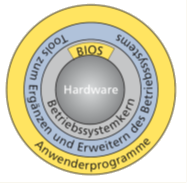

Betriebssysteme
Nach DIN 44300 umfasst ein Betriebssystem die Programme eines Rechners, die zusammen mit den Eigenschaften dieser Rechneranlage die Basis der möglichen Betriebsarten bilden und die Abwicklung von Programmen steuern und überwachen.
Unter einem Betriebssystem (engl. Operating System – OS) versteht man Software, die zusammen mit den Hardwareeigenschaften des Computers die Basis zum Betrieb bildet und insbesondere die Abarbeitung von Programmen steuert und überwacht.
Die Aufgaben eines Betriebssystems:
- Systembedienung und -speicherung sowie Fehlersuche
- Regeln des Zugriffs auf die externen Speicher
- Laden und Ausführen von Anwenderprogrammen
- Speichern und Verwalten von Daten und Programmen
- Steuern der Ein- und Ausgabegeräte in Koordination mit der CPU

Architektur des Betriebssystems
Zur logischen Strukturierung wird das Betriebssystem in mehrere Schichten eingeteilt.
- Die unterste Schicht verwaltet die Hardware des Rechners.
- In der darüber liegenden Schicht sind die grundlegenden Ein-/Ausgabe-Dienste für Plattenspeicher und Peripheriegeräte enthalten.
- In der dritten Schicht sind die Kommunikations- und Netzwerkdienste, Dateien und Dateisysteme untergebracht.
- In der Anwenderschicht liegen die Softwareschnittstellen zu den Programmen.
Jede Schicht bildet eine abstrakte Maschine, die mit ihren benachbarten Schichten über definierte Schnittstellen kommuniziert. Sie kann Funktionen der nächstniedrigeren Schicht aufrufen und ihrerseits Funktionen für die nächsthöhere Schicht zur Verfügung stellen. Das Zusammenspiel der Schichten wird in Vorschriften, sogenannten Protokollen geregelt. Die unterste Schicht setzt immer direkt auf der Rechner-Hardware auf.